1004B10 POWER UNIT with manual gearbox - R.R.
- Path
- Procedures > 10 ENGINE > 1004 ENGINE AND POWER UNIT > 1004B POWER UNIT ASSEMBLY > 1004B10 POWER UNIT with manual gearbox - R.R.
- Kind
- repair procedure (removal / refitting; the operation number is the code)
- Applies to
- engines: 2.4 JTD 10V; all production periods
- Interactive page
- https://sloeber94.github.io/elrnDB-lThss/en/#/75410
Applies to: engines: 2.4 JTD 10V; all production periods
 Removing
Removing
 Refitting
Refitting- Position the vehicle on a lift.
- Open the boot and disconnect the negative battery terminal.
See in Op. 7040D50 ENGINE COMPARTMENT UPPER SOUND INSULATION SHIELD - R.R.
See in Op. 1016A10 SOUND-PROOFING COVER - R.R.
See in Op. 5040A10 Air conditioning coolant circuit - Drying and Repressurizing
See in Op. 7055B54 PROTECTION/GUARD under engine - R.R.
1. Undo the fixing nuts (1a) and remove the bonnet lock (1b) from its housing in the crossmember.
2. Undo the lower nut (2a) and remove the lock reinforcement bracket (2b).
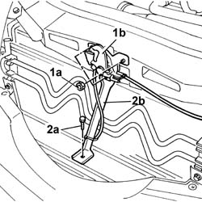
Applies to: engines: 2.4 JTD 10V; all production periods
1. Undo the fixing bolts.
2. Remove the upper front crossmember.
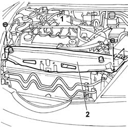
Applies to: engines: 2.4 JTD 10V; all production periods
1. Remove the cold air intake pipe from the connector on the air filter.
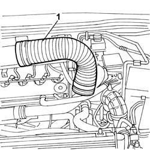
Applies to: engines: 2.4 JTD 10V; all production periods
- Have a suitable container for collecting the coolant ready.
- Raise the lift.
1. Disconnect the lower radiator pipe.
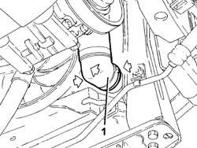
Applies to: engines: 2.4 JTD 10V; all production periods
- Lower the lift.
1. Disconnect the upper radiator pipe.
- Remove the container for collecting the engine coolant.
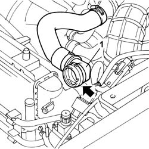
Applies to: engines: 2.4 JTD 10V; all production periods
1. Disconnect the electrical connections (1a) and (1b) for the engine cables/fan-radiator cables coupling.
2. Undo the nut (2a) and disconnect the earth lead (2b) from the bodyshell.
 | Description | Connector |
|---|---|---|
1 | Front/radiator coupling | D009A |
| Description | Connector |
|---|---|---|
1 | Front/radiator coupling | D009B |
| Description | Connector |
|---|---|---|
2b | Right front earth | C011 |
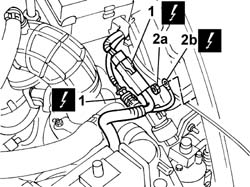
Applies to: engines: 2.4 JTD 10V; all production periods
1. Undo the fixing bolt.
2. Disconnect the air conditioning system compressor pipe from the compressor.
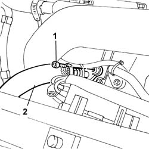
Applies to: engines: 2.4 JTD 10V; all production periods
1. Undo the bolts fixing the air conditioning system pipes to the drier filter.
2. Undo the bolts fixing the filter to the condenser.
3. Remove the drier filter.
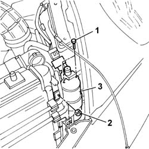
Applies to: engines: 2.4 JTD 10V; all production periods
1. Release the power assisted steering system cooling coil from the condenser.
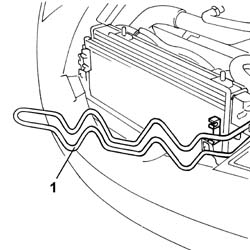
Applies to: engines: 2.4 JTD 10V; all production periods
See in Op. 4450B12 Front WHEELS (two) - R.R.
See in Op. 7055B42 FRONT WHEEL ARCH LINER (one), left or right - R.R.
- (right side)
See in Op. 7055B64 Engine compartment DUST SEAL in front wheel arch (one), left or right - R.R.
- (right side)
See in Op. 7210E10 FRONT BUMPER
1. Undo the fixing bolts.
2. Remove the headlamp washer jets from the housing in the crossmember.
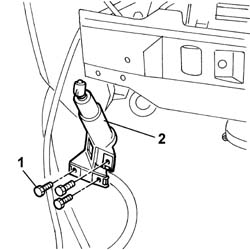
Applies to: engines: 2.4 JTD 10V; all production periods
1. Disconnect the acceleration sensor electrical connection.
| Description | Connector |
|---|---|---|
1 | Left front vertical acceleration sensor | K006 |
| Description | Connector |
|---|---|---|
1 | Right front vertical acceleration sensor | K007 |
Release the electrical wiring and the jet water pipe from the bands under the crossmember.
2. Undo the fixing nuts.
3. Remove the lower crossmember.
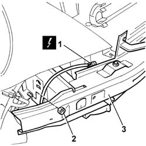
Applies to: engines: 2.4 JTD 10V; all production periods
1. Undo the bolts fixing the air/air heat exchanger to the radiator.
2. Disconnect the two heat exchanger pipes from the connector (2a) on the turbocharger and from the connector (2b) on the intake air pipe.
3. Remove the air/air heat exchanger complete with pipes.
4. Release the radiator-condenser-fan assembly from the lower fastenings and remove it through the top of the engine compartment.
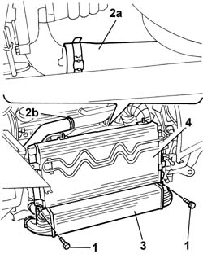
Applies to: engines: 2.4 JTD 10V; all production periods
- Raise the lift.
1. Undo the bolts fixing the resonator.
- Lower the lift.
2. Undo the bolts fixing the filter mounting bracket to the bodyshell.
3. Disconnect the engine oil vapour recirculation pipes from the tappet cover.
4. Disconnect the pipe connected to the air filter casing from the turbocharger.
5. Disconnect the electrical connection for flow meter.
6. Remove the air filter casing complete with filter element.
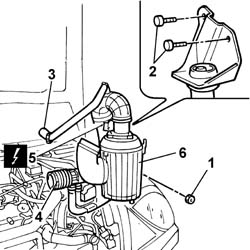
Applies to: engines: 2.4 JTD 10V; all production periods
1. Undo the fixing bolt and disconnect the pipe from the connector on the compressor.
2. Undo the fixing nut and separate the front section of the pipe from the rear section.
3. Remove the front section of the air conditioning system high pressure pipe.
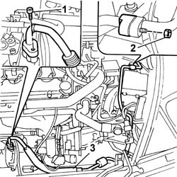
Applies to: engines: 2.4 JTD 10V; all production periods
1. Undo the fixing nuts.
2. Release the turbocharger vane management solenoid valve from the crossmember and secure it to the power unit.
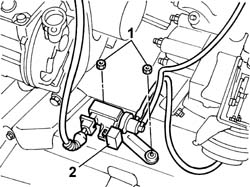
Applies to: engines: 2.4 JTD 10V; all production periods
1. Disconnect the electrical connection for the engine management control unit.
| Description | Connector |
|---|---|---|
1 | Engine management control unit | M010B |
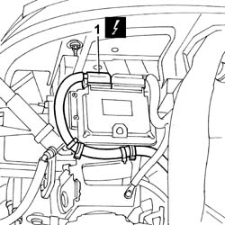
Applies to: engines: 2.4 JTD 10V; all production periods
1. Lift up the retaining spring (1a) and release the oil pipe (1b) for the hydraulic clutch release cylinder.
2. Undo the nut (2a) and disconnect the earth lead (2b) from the gearbox.
| Description | Connector |
|---|---|---|
2b | Battery earth | C001 |
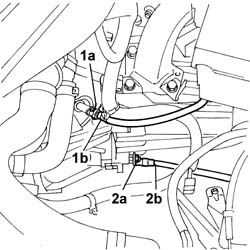
Applies to: engines: 2.4 JTD 10V; all production periods
1. Disconnect the two heater coolant supply and return pipes from the thermostat.
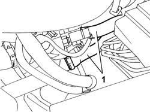
Applies to: engines: 2.4 JTD 10V; all production periods
1. Move the pin (1a) back until it is released from the housing in the bracket (1b).
2. Press the two tabs (2a) and lift up the head (2b) until it is released from the ball joint.
- Carry out this operation on the other flexible cable.
3. Release the two flexible cables and place them well away from the power unit.
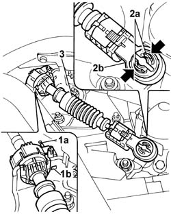
Applies to: engines: 2.4 JTD 10V; all production periods
1. Open the protective cover (1a), loosen the nut (1b) and disconnect the starter motor supply lead (1c).
| Description | Connector |
|---|---|---|
1c | Starter motor | A020A |
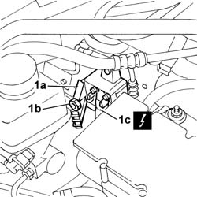
Applies to: engines: 2.4 JTD 10V; all production periods
1. Disconnect the electrical connection for the heater plugs from the control unit.
2. Disconnect the vacuum pipe from the brake servo.
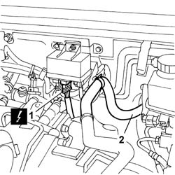
Applies to: engines: 2.4 JTD 10V; all production periods
1. Disconnect the electrical connection for the engine/dashboard cable loom coupling.
2. Disconnect the fuel pipes from the connectors on the return manifold.
3. Disconnect the fuel supply pipes (3a) and (3b) from the fuel filter.
4. Disconnect the electrical connections (4a) and (4b).
5. Remove the fuel filter assembly.
6. Undo the bolt on the bodyshell fixing the reaction rod.
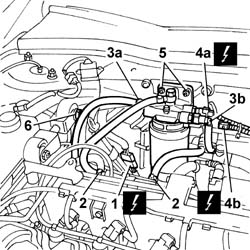
Applies to: engines: 2.4 JTD 10V; all production periods
1. Disconnect the engine coolant recirculation pipe (1a) and the pipe (1b) connecting the coolant reservoir to the rigid pipe.
2. Disconnect the engine coolant level sensor.
| Description | Connector |
|---|---|---|
2 | Engine coolant level sensor | K026 |
3. Release the engine wiring from the reservoir and undo the bolt fixing the reservoir.
4. Remove the engine coolant reservoir.
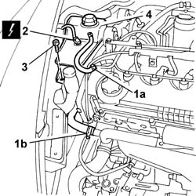
Applies to: engines: 2.4 JTD 10V; all production periods
- Using a syringe, draw off the power assisted steering fluid from the reservoir.
1. Undo the connector (1a) and disconnect the pipe (1b) connecting the power assisted steering pump-steering box.
2. Disconnect the pipe connected to the fluid reservoir from the power assisted steering pump.
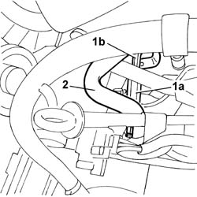
Applies to: engines: 2.4 JTD 10V; all production periods
- Raise the lift.
1. Undo the nuts fixing the front section of the exhaust to the manifold.
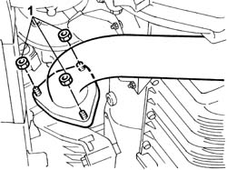
Applies to: engines: 2.4 JTD 10V; all production periods
1. Disconnect the band for the left and right driveshafts secured to the differential and the intermediate driveshaft.
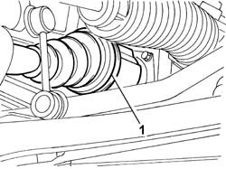
Applies to: engines: 2.4 JTD 10V; all production periods
1. Undo the fixing bolts.
2. Undo the upper fixing nut (2a) and disconnect the end of the anti-roll bar (2b).
- Undo the fixing nut (3a) and move the acceleration sensor (3b) to the side.
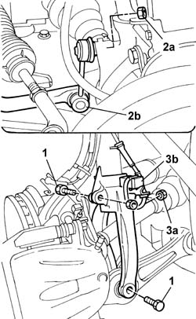
Applies to: engines: 2.4 JTD 10V; all production periods
1. Undo the fixing bolts.
2. Separate the two heads from the suspension housing.
3. Remove the suspension fork.
- Move the steering knuckle backwards and release the three-lobe joints for the driveshafts from the housing in the differential and the intermediate shaft.
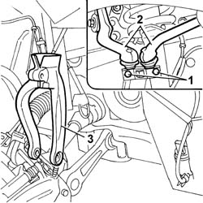
Applies to: engines: 2.4 JTD 10V; all production periods
1. Undo the nut (1a) fixing the timing side engine support (1b) to the supporting crossmember.
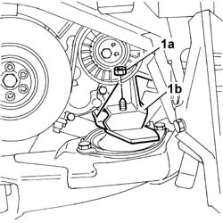
Applies to: engines: 2.4 JTD 10V; all production periods
1. Undo the nut (1a) fixing the rear engine support (1b) to the supporting crossmember.
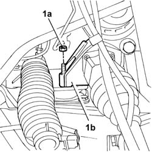
Applies to: engines: 2.4 JTD 10V; all production periods
1. Disconnect the electrical connection on the gearbox for the reverse gear engagement sensor.
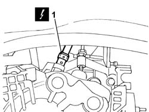
Applies to: engines: 2.4 JTD 10V; all production periods
- Place some suitably thick material in between in order to be able to support the engine without it resting on the crossmember whilst removing the gearbox side engine support.
1. Undo the nut fixing the engine support to the flexible mounting.
2. Undo the bolts fixing the engine support to the gearbox.
3. Remove the engine support from the engine compartment.
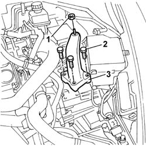
Applies to: engines: 2.4 JTD 10V; all production periods
1. Position a bracket (1a), complete with hook (1b), on the pressure pump support.
2. Fit the bracket (2a) in the gearbox side engine support housing and secure the chain and hook assembly (2b) to it.
3. Fit the brackets (3a) and (3b) to the exhaust manifold studs and secure the chain and hook assembly (3c) to them.
4. Secure the chains to the hydraulic lifting device and tension the engine.
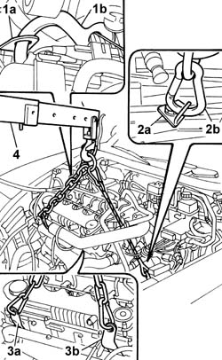
Applies to: engines: 2.4 JTD 10V; all production periods
- Raise the power unit tilting the gearbox unit downwards, rotate the assembly so that the timing side is towards the front of the vehicle then, using the hydraulic lift, position the power unit on a suitable support.
Applies to: engines: 2.4 JTD 10V; all production periods
Refitting
Removing- Support the power unit using the hydraulic lift fitted with suitable chains and position the power unit in the special housing in the vehicle.
- Remove the chains, hooks and brackets fitted for supporting the power unit.
- Fit the gearbox side engine support.
- Tighten the bolts fixing the rigid support to the bellhousing to torque.
 | Value - daNm | Fastening | Component | Ø |
|---|---|---|---|---|
. | (Gearbox side) 5 | Bolts | POWER UNIT GEAR BOX END RIGID MOUNT | M12 X 1.25 |
- Remove the material used for supporting the gearbox whilst removing-refitting the support.
- Connect the electrical connection on the gearbox for the reverse gear engagement sensor.
- Tighten the nut fixing the rear engine support to the supporting crossmember to torque.
| Value - daNm | Fastening | Component | Ø |
|---|---|---|---|---|
. | 5 | Nut | RIGID REAR SUPPORT POWER UNIT | M10 X 1.25 |
- Tighten the nut fixing the timing side engine support to the supporting crossmember to torque.
| Value - daNm | Fastening | Component | Ø |
|---|---|---|---|---|
. | 5 | Nut | RIGID ENGINE MOUNT, TIMING SIDE | M10 X 1.25 |
- Fit the suspension fork on the shock absorber.
- Position the steering knuckle in its original position, checking that the driveshafts are engaged in the housing in the differential and the intermediate driveshaft.
- Secure the two ends in the special housings in the suspension and tighten the fixing bolts to torque.
| Value - daNm | Fastening | Component | Ø |
|---|---|---|---|---|
. | 3.4 | Bolt | FRONT SHOCK ABSORBERS (S.M.) | M8 |
- Tighten the bolts fixing the forks to torque.
| Value - daNm | Fastening | Component | Ø |
|---|---|---|---|---|
. | 9 | Bolt | FRONT DAMPER FORK ON WISHBONE | M12 |
| Value - daNm | Fastening | Component | Ø |
|---|---|---|---|---|
. | 11.6 | Bolt | FRONT DAMPER FORK ON WISHBONE | M12 X 1.25 |
- Tighten the nuts fixing the anti-roll bar left and right ends to torque.
| Value - daNm | Fastening | Component | Ø |
|---|---|---|---|---|
. | 5.5 | Nut | FRONT ANTI-ROLL BAR JOINTS | M10 X 1.25 |
- Fit the left and right acceleration sensors in the housing in the fork and secure them using the fixing nuts.
- Secure the driveshafts to the differential and to the intermediate driveshaft using new bands.
- Tighten the nuts fixing the front section of the exhaust to the manifold.
| Value - daNm | Fastening | Component | Ø |
|---|---|---|---|---|
. | 2.8 | Nut | EXHAUST PIPE TO ENGINE | M8 |
- Connect the power assisted steering system pipes to the pump.
- Position the engine coolant reservoir in the special housing and reposition the electrical wiring in the special housing at the rear of the reservoir.
- Tighten the bolt fixing the reservoir to the windscreen washer fluid reservoir and to the bodyshell.
- Connect the electrical connection for the engine coolant level sensor.
| Description | Connector |
|---|---|---|
. | Engine coolant level sensor | K026 |
- Connect the engine coolant recirculation pipe and the pipe connecting the coolant reservoir to the rigid pipe.
- Screw in and then tighten the bolt fixing the reaction rod to the bodyshell to torque.
| Value - daNm | Fastening | Component | Ø |
|---|---|---|---|---|
. | (Bodyshell) 5 | Bolt | POWER UNIT REACTION ROD | M10 X 1.25 |
- Fit the fuel filter assembly in the special housing in the bulkhead.
- Tighten the nuts fixing the fuel filter to the bodyshell.
- Connect the electrical connections for the fuel filter.
- Connect the pipes to the pressure pump and return manifold and the return pipe from the return manifold to the reservoir to the filter filter.
- Connect the electrical connection for the engine/dashboard cable loom coupling.
- Connect the electrical connection for the heater plugs to the control unit.
- Connect the vacuum pipe to the brake servo single-acting valve.
- Connect the starter motor supply wiring to the special casing near the ABS unit.
| Description | Connector |
|---|---|---|
. | Starter motor | A020A |
- Connect the two flexible gear engagement and selector cables to the housing on the control linkage and the mounting bracket.
- Connect the two heater coolant supply and return pipes to the thermostat.
- Connect the fluid pipe for the hydraulic clutch release cylinder.
- Connect the battery earth lead to the gearbox.
| Description | Connector |
|---|---|---|
. | Battery earth | C001 |
- Connect the electrical connection for the engine management control unit.
| Description | Connector |
|---|---|---|
. | Engine management control unit | M010B |
- Position the turbocharger vane management solenoid valve in the housing in the engine supporting crossmember and tighten the fixing nuts.
- Position the air conditioning system high pressure pipe and connect it to the compressor connector tightening the fixing bolt.
- Connect the air conditioning system high pressure pipe to the coupling with the rear section of the pipe near the junction unit.
- Position the air filter casing in the engine compartment and tighten the bolts fixing the resonator and the mounting bracket.
- Connect the electrical connection to the air flow meter.
- Connect the air pipe to the turbocharger and the engine oil vapour recirculation pipe to the tappet cover.
- Position the radiator/condenser/fan assembly in the special housing in crossmember engaging the rubber buffers on the lower part of the radiator in the special housing in the crossmember.
- Fit the air heat exchanger and tighten the bolts fixing it to the radiator.
- Connect the air/air heat exchanger air pipes.
- Fit the lower crossmember in the special housing in the struts.
- Tighten the nuts fixing the crossmember to torque.
| Value - daNm | Fastening | Component | Ø |
|---|---|---|---|---|
. | 2.5 | Nuts | CROSSMEMBER | M8 |
- Secure the engine wiring to the crossmember and fasten it using the bands.
- Connect the electrical connection for the acceleration sensor.
| Description | Connector |
|---|---|---|
. | Left front vertical acceleration sensor | K006 |
| Description | Connector |
|---|---|---|
. | Right front vertical acceleration sensor | K007 |
- Fit the headlamp washer jets to the crossmember and tighten the fixing nuts.
See in Op. 7210E10 FRONT BUMPER
See in Op. 7055B42 FRONT WHEEL ARCH LINER (one), left or right - R.R.
- (right side)
See in Op. 7055B64 Engine compartment DUST SEAL in front wheel arch (one), left or right - R.R.
- (right side)
See in Op. 4450B12 Front WHEELS (two) - R.R.
- Reposition the power assisted steering system cooling coil in the special housing on the radiator.
- Fit the drier filter and fasten it to the condenser using the fixing bolts.
- Connect the two air conditioning system pipes to the drier filter.
- Connect the air conditioning system pipe to the compressor.
- Connect the electrical connections for the engine cables/fan-radiator cables coupling.
| Description | Connector |
|---|---|---|
. | Front/radiator coupling | D009A |
| Description | Connector |
|---|---|---|
. | Front/radiator coupling | D009B |
- Connect the earth lead to the bodyshell and secure it using the nut.
| Description | Connector |
|---|---|---|
. | Right front earth | C011 |
- Connect the upper and lower engine coolant pipes to the radiator.
- Fit the cold air intake pipe to the connector on the air filter.
- Fit the upper front crossmember and tighten the fixing bolts to torque.
| Value - daNm | Fastening | Component | Ø |
|---|---|---|---|---|
. | 0.6 | Bolts | FRONT WING CROSSMEMBER HEADLAMP HOUSINGS | M6 |
- Fit the bonnet lid lock complete with bracket and tighten the nuts fixing it to the upper crossmember and the lower crossmember.
See in Op. 7055B54 PROTECTION/GUARD under engine - R.R.
See in Op. 5040A10 Air conditioning coolant circuit - Drying and Repressurizing
See in Op. 0010T20 Engine REFRIGERANT FLUID - Change
See in Op. 0010T21 ENGINE COOLANT - Check density and top up if necessary
- [0010T21]
See in Op. 0010T64 Brake and/or clutch fluid - Check level and top up, if necessary
See in Op. 1016A10 SOUND-PROOFING COVER - R.R.
See in Op. 7040D50 ENGINE COMPARTMENT UPPER SOUND INSULATION SHIELD - R.R.
- Close the bonnet lid and remove the vehicle from the lift.
Topics linked from this page (11)
- 0010T20 Engine REFRIGERANT FLUID - Change
- 0010T21 ENGINE COOLANT - Check density and top up if necessary
- 0010T64 Brake and/or clutch fluid - Check level and top up, if necessary
- 1016A10 SOUND-PROOFING COVER - R.R.
- 4450B12 Front WHEELS (two) - R.R.
- 5040A10 Air conditioning coolant circuit - Drying and Repressurizing
- 7040D50 ENGINE COMPARTMENT UPPER SOUND INSULATION SHIELD - R.R.
- 7055B42 FRONT WHEEL ARCH LINER (one), left or right - R.R.
- 7055B54 PROTECTION/GUARD under engine - R.R.
- 7055B64 Engine compartment DUST SEAL in front wheel arch (one), left or right - R.R.
- 7210E10 FRONT BUMPER